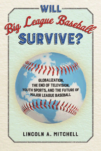

<HTML><head>
<meta name='robots' content='noindex,nofollow' /><script> (function(i,s,o,g,r,a,m){i['GoogleAnalyticsObject']=r;i[r]=i[r]||function(){  (i[r].q=i[r].q||[]).push(arguments)},i[r].l=1*new Date();a=s.createElement(o),  m=s.getElementsByTagName(o)[0];a.async=1;a.src=g;m.parentNode.insertBefore(a,m)   })(window,document,'script','//www.google-analytics.com/analytics.js','ga');   ga('create', 'UA-43183130-1', 'temple.edu');   ga('send', 'pageview'); </script><title>Lincoln A. Mitchell: Will Big League Baseball Survive? - Print</TITLE><link rel="stylesheet" href="../general.css" type="text/css"><SCRIPT LANGUAGE = JAVASCRIPT></SCRIPT></HEAD><BODY LINK="#3152A5" VLINK="#3152A5" ALINK=Gray BGCOLOR=White><CENTER><P CLASS=intro><br>A cogent analysis of the future of big league baseball in the context of a changing media, economic, and social environment<br><br></P></CENTER><br>&nbsp;<!--none//--><Table width="100%" border=0 cellspacing=5><tr><td width="175" align="center"></td><td><h1 class = "booktitle">Will Big League Baseball Survive?</h1> <h1 class = "subtitle">Globalization, the End of Television, Youth Sports, and the Future of Major League Baseball</h1><h3 class="author">Lincoln A. Mitchell</h3><p class="info">paper EAN: 978-1-4399-1379-6 (ISBN:1-4399-1379-X)</br>
        $24.95, Oct 16, <font color=#990033>Available</font><br><p class="info">cloth EAN:  978-1-4399-1378-9 (ISBN:1-4399-1378-1)</br>$94.50, Oct 16, <font color=#990033>Available</font><br><p class="info">Electronic Book EAN: 978-1-4399-1380-2 (ISBN:1-4399-1380-3)</br>$24.95, Oct 16, <font color=#990033>Available</font><br><p class="info">234 pp, 5.5 x  8.25, 2 tables</p></td></tr></table></P></td></tr></table><BR><BLOCKQUOTE>
  <p>"<em>Columnists and pundits love to write Major League Baseball's obituary, even as the league sets new records for revenue and attendance. Lincoln Mitchell confronts this paradox with a deep and provocative examination of the game's past, present, and future.</em> Will Big League Baseball Survive?<em> is a book that all serious fans should read&#8212;and the league's commissioner, perhaps, most of all.</em>"<br>&#8212;<strong>Sam Miller</strong>, co-author of <em>The Only Rule Is It Has to Work: Our Wild Experiment Building a New Kind of Baseball Team</em><br>
  </p>
  <p></BLOCKQUOTE><P><P><p>Major League Baseball is a beloved American institution that has been a product of the economic, social, and media structures that have evolved in the United States over the last century. In his shrewd analysis, <i>Will Big League Baseball Survive?</i>, Lincoln Mitchell asks whether the sport will continue in its current form as a huge, lucrative global business that offers a monopoly in North America&#8212;and whether those structures are sustainable.<br><p>Mitchell places baseball in the context of the larger, evolving American and global entertainment sector. He examines how both changes directly related to baseball&#8212;including youth sports and the increased globalization of the game&#8212;as well as broader societal trends such as developments in media consumption and celebrity culture will impact big league baseball over the next few decades.<br><p>His book ultimately proposes several possible scenarios for what big league baseball might look like. Will it become more global, smaller, or remain the same, or will it transform into some kind of hybrid of the three?<br><P CLASS="top"><A HREF="#top">BACK TO TOP</A></P></p><BR><H2 class="inpageheading">Excerpt</h2><P>Excerpt available at <a href="http://www.temple.edu/tempress">www.temple.edu/tempress</a></p><br><P CLASS="top"><A HREF="#top">BACK TO TOP</A></P></p><p><h2  class="inpageheading"><A NAME="reviews"></a>Reviews</h2><p><i>"In response to the provocative title of Lincoln Mitchell's provocative book, we can confidently say, as Mitchell does (spoiler alert): Yes, it almost certainly will. But Mitchell's aim here isn't really to answer that question. His goal is far more interesting; by looking at how Major League Baseball has arrived at its current level of popularity and making some educated guesses about the future, Mitchell lays out compelling scenarios for what MLB's future might hold. Winston Churchill said it's a mistake to try to look too far ahead, but in</i> Will Big League Baseball Survive? <i>Mitchell looks just far enough to make his book essential reading</i>."<br>&#8212;<b>Rob Neyer</b>, author of <i>Rob Neyer's Big Book of Baseball Legends: The Truth, the Lies, and Everything Else</i><p><i>"Mitchell meanders around the question his book's title poses.... delving into [the] industry's past, present, and future, but for the most part factoids, human interest stories, and homilies dominate the prose as he lays at the lap of the commissioner, franchises, and fans the challenges posed by globalization, changing demographics, and technological change.... For the middle-aged fan, this is a pleasurable read at the beach or on a plane.... Summing Up: Recommended."</i><br>
		&#8212;<b><i>Choice</i></b></p>
		<br><P CLASS="top"><A HREF="#top">BACK TO TOP</A></P></b></p><BR><p><h2 class="inpageheading"><A NAME="contents"></a>Contents</h2><P><SPAN STYLE="font-family: 'Verdana';font-size: 13px;" >Preface: The Future of Big League Baseball<BR>Acknowledgments<BR><BR>1. The Selig Years<BR>2. Lefty, Josh, the Barnstormers, and Branch<BR>3. Gia, Bert, and Masanori<BR>4. The Eternal and Ever-Changing Game<BR>5. John Rocker and Russ Hodges<BR>6. Dirty Kurt and Bam Bam<BR>7. Joaquin Andujar<BR><BR>Notes<BR>Index</SPAN></P><P CLASS="top"><A HREF="#top">BACK TO TOP</A></P></p></P><BR>&nbsp;<p><P><H2  class="inpageheading"><A NAME="author bio"></a>About the Author(s)</H2><p><b>Lincoln A. Mitchell</b> is a scholar and writer based in New York City. He was on the faculty of Columbia University for many years and has contributed to numerous publications including <i>The Washington Quarterly, The American Interest, World Affairs Journal, The Washington Pos</i>t and <i>The New York Times</i>. Visit him online at www.lincolnmitchell.com.<br><P CLASS="top"><A HREF="#top">BACK TO TOP</A></P></P><p><h2  class="inpageheading"><A NAME="subjects"></a>Subject Categories</h2><P><A HREF="/tempress/sociology.html" TARGET="_top">Sociology</a><BR><P><A HREF="/tempress/sports.html" TARGET="_top">Sports</a></P></p><P></P><P>&nbsp;</P><font face="Arial" size="1"><a href="copyright.html" OnMouseOver="window.status='Web Copyright Policy';return true;" OnMouseOut="window.status=''" TITLE="Web Copyright Policy">&copy;</a> 2017 <a href="http://www.temple.edu" target="new" OnMouseOver="window.status='Link to Temple University home page';return true;" OnMouseOut="window.status=''" TITLE="Link to Temple University home page">Temple University</a>. All Rights Reserved. This page: <a href="http://www.temple.edu/tempress/titles/2412_reg.html"OnMouseOver="window.status='Link to the book page';return true;" OnMouseOut="window.status=''" TITLE="Link to the book page">http://www.temple.edu/tempress/titles/2412_reg.html.</a></font></BODY></HTML>                    
